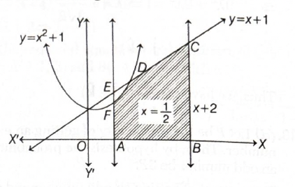

Quick explanation: Factorise \(2x^2-5x+2=0\) as
\((2x-1)(x-2)=0\). Since \(\alpha<1\),
\(\alpha=\dfrac{1}{2}\), and the other root is \(2\). Checking
the options, \(4\alpha^3+3\alpha=2\).
Since \(\alpha<1\), we get \(\alpha=\dfrac{1}{2}\).
The other root is \(2\).
Now check option \((b)\):
\(4\alpha^3+3\alpha=4\left(\dfrac{1}{2}\right)^3+3\left(\dfrac{1}{2}\right)\).
This becomes
\(4\cdot\dfrac{1}{8}+\dfrac{3}{2}=\dfrac{1}{2}+\dfrac{3}{2}=2\).
Thus, the other root is \(4\alpha^3+3\alpha\).
Final result: Other root
\(=4\alpha^3+3\alpha\).
Simple memory tip: If a condition like
\(\alpha<1\) is given, first identify which root is
\(\alpha\), then test the other root.
Exam shortcut: Factorise quickly:
\((2x-1)(x-2)=0\). Since \(\alpha=\dfrac{1}{2}\), substitute
only once in the options to find \(2\).
Why the other options are wrong: For
\(\alpha=\dfrac{1}{2}\), option \((a)\) gives \(3\), option
\((c)\) gives \(-1\), and option \((d)\) gives \(0\). Only
option \((b)\) gives \(2\).
Answer: \((d)\ 24\)
Quick explanation: \(A\cap B\) means numbers
common to both sets. So the numbers must be multiples of both
\(8\) and \(12\), which means multiples of
\(\operatorname{LCM}(8,12)=24\).
If \(x\in A\cap B\), then \(x\in A\) and \(x\in B\).
So, \(x\) must be a multiple of \(8\) and also a multiple of
\(12\).
A number that is a multiple of both \(8\) and \(12\) must be a
multiple of their least common multiple.
Now, \(8=2^3\) and \(12=2^2\cdot3\).
So, \(\operatorname{LCM}(8,12)=2^3\cdot3=24\).
Therefore, \(A\cap B\) consists of multiples of \(24\).
Final result: \(A\cap B\) consists of multiples
of \(24\).
Simple memory tip: Intersection of
multiple-sets means common multiples, so use LCM.
Exam shortcut: Common multiples of \(8\) and
\(12\) are multiples of \(24\).
Why the other options are wrong: \(96\) is a
common multiple but not the least base multiple. \(20\) and
\(4\) are not the correct common-multiple generator for \(8\)
and \(12\).
Answer: \((d)\) infinitely many solutions
Quick explanation: Let \(z=x+iy\). Then
\(z^2+|z|^2=0\) simplifies to \(2x(x+iy)=0\). Since \(z\ne0\),
we must have \(x=0\), and \(y\) can be any non-zero real number,
giving infinitely many solutions.
Then \(|z|^2=z\overline{z}=(x+iy)(x-iy)=x^2+y^2\).
Also, \(z^2=(x+iy)^2=x^2-y^2+2ixy\).
Now substitute in the equation \(z^2+|z|^2=0\).
We get \(x^2-y^2+2ixy+x^2+y^2=0\).
This simplifies to \(2x^2+2ixy=0\).
Factorise: \(2x(x+iy)=0\).
So, either \(x=0\) or \(x+iy=0\).
But \(x+iy=z\), and \(z\ne0\), so \(x+iy=0\) is not allowed.
Therefore, \(x=0\).
If \(x=0\), then \(z=iy\).
Since \(z\ne0\), \(y\ne0\).
So \(y\) can be any non-zero real number.
Hence, there are infinitely many solutions.
Final result: Infinitely many solutions exist.
Simple memory tip: For complex equations, write
\(z=x+iy\) and compare real and imaginary parts.
Exam shortcut: Use \(|z|^2=z\overline{z}\),
simplify to \(2xz=0\), and since \(z\ne0\), get \(x=0\).
Why the other options are wrong: The solution
set is all non-zero purely imaginary numbers, so it is not
limited to \(1\), \(2\), or \(3\) solutions.
Answer: \((a)\ \dfrac{1}{32}\)
Quick explanation: Factor the expression as
\(\left(1-\cos\dfrac{x^2}{2}\right)\left(1-\cos\dfrac{x^2}{4}\right)\).
Then use \(1-\cos u=2\sin^2\dfrac{u}{2}\) and the standard limit
\(\lim\limits_{u\to0}\dfrac{\sin u}{u}=1\).
Therefore, the limit becomes
\(\lim\limits_{x\to0}\dfrac{8}{x^8}\cdot2\sin^2\dfrac{x^2}{4}\cdot2\sin^2\dfrac{x^2}{8}\).
This is
\(\lim\limits_{x\to0}\dfrac{32}{x^8}\sin^2\dfrac{x^2}{4}\sin^2\dfrac{x^2}{8}\).
Rewrite it as
\(\dfrac{32}{4^2\cdot8^2}\left(\dfrac{\sin(x^2/4)}{x^2/4}\right)^2\left(\dfrac{\sin(x^2/8)}{x^2/8}\right)^2\).
Using \(\lim\limits_{u\to0}\dfrac{\sin u}{u}=1\), both bracketed
limits become \(1\).
So the value is
\(\dfrac{32}{16\cdot64}=\dfrac{32}{1024}=\dfrac{1}{32}\).
Final result: The value of the limit is
\(\dfrac{1}{32}\).
Simple memory tip: Whenever you see \(1-\cos
u\) in limits, convert it to \(2\sin^2\dfrac{u}{2}\).
Exam shortcut: First factor the bracket into
\((1-\cos A)(1-\cos B)\), then use the standard sine limit.
Why the other options are wrong: Correct
factorisation and standard-limit simplification give exactly
\(\dfrac{1}{32}\), so \(\dfrac{1}{8}\), \(\dfrac{1}{64}\), and
\(\dfrac{1}{16}\) are not correct.
Answer: \((b)\ 14\)
Quick explanation: Since \(\dfrac{1}{16},a,b\)
are in GP, \(a^2=\dfrac{b}{16}\), so \(b=16a^2\). Also,
\(\dfrac{1}{a},\dfrac{1}{b},6\) are in AP, so
\(\dfrac{2}{b}=\dfrac{1}{a}+6\). Substituting \(b=16a^2\) gives
\(a=\dfrac{1}{12}\), hence \(b=\dfrac{1}{9}\), and
\(72(a+b)=14\).
BITSAT chapter / topic / subtopic: Algebra
\(\rightarrow\) Sequences and Series - Page M6
Given \(\dfrac{1}{16},a,b\) are in GP.
For three terms in GP, middle term squared equals product of
first and third terms.
So, \(a^2=\dfrac{1}{16}\cdot b=\dfrac{b}{16}\).
Therefore, \(b=16a^2\).
Also, \(\dfrac{1}{a},\dfrac{1}{b},6\) are in AP.
For three terms in AP, twice the middle term equals the sum of
first and third terms.
Simple memory tip: For GP, use middle squared
\(=\) product of extremes. For AP, use twice middle \(=\) sum of
extremes.
Exam shortcut: First get \(b=16a^2\), then
substitute into \(\dfrac{2}{b}=\dfrac{1}{a}+6\). The positive
root gives the answer quickly.
Why the other options are wrong: Only
\(a=\dfrac{1}{12}\) and \(b=\dfrac{1}{9}\) satisfy both GP and
AP conditions with \(a,b>0\), giving \(14\).
Answer: \((c)\ 2\)
Quick explanation: Let \(y=\sqrt{x^3-1}\). In
\((x+y)^5+(x-y)^5\), the odd powers of \(y\) cancel and only
even powers of \(y\) remain. Simplifying gives
\(2(x^5+10x^3(x^3-1)+5x(x^3-1)^2)\), and the sum of coefficients
of odd degree terms is \(2\).
Using binomial expansion, the terms containing odd powers of
\(y\) cancel when \((x+y)^5\) and \((x-y)^5\) are added.
So, \((x+y)^5+(x-y)^5=2(x^5+10x^3y^2+5xy^4)\).
Now substitute \(y^2=x^3-1\).
Then \(y^4=(x^3-1)^2\).
Therefore, the expression becomes
\(2\left(x^5+10x^3(x^3-1)+5x(x^3-1)^2\right)\).
Expand inside the bracket: \(x^5+10x^6-10x^3+5x(x^6-2x^3+1)\).
This becomes \(x^5+10x^6-10x^3+5x^7-10x^4+5x\).
So the full expression is \(2(5x^7+10x^6+x^5-10x^4-10x^3+5x)\).
The odd degree terms are \(5x^7\), \(x^5\), \(-10x^3\), and
\(5x\).
The sum of their coefficients inside the bracket is
\(5+1-10+5=1\).
Since the whole expression is multiplied by \(2\), the required
sum is \(2\cdot1=2\).
Final result: Sum of coefficients of all odd
degree terms \(=2\).
Simple memory tip: In \((a+b)^n+(a-b)^n\), odd
powers of \(b\) cancel and even powers of \(b\) survive.
Exam shortcut: Use cancellation first; do not
expand both fifth powers completely.
Why the other options are wrong: After
simplification, the odd-degree coefficient sum is exactly \(2\),
so \(1\), \(3\), and \(4\) do not match.
Answer: \((d)\ 1800\)
Quick explanation: A \(6\)-digit number is
formed using only the five digits \(1,3,5,7,9\), and all five
must appear. So exactly one digit must be repeated. Choose the
repeated digit in \({}^{5}C_1\) ways and arrange the six digits
in \(\dfrac{6!}{2!}\) ways.
We need a \(6\)-digit number in which only these digits appear
and all five digits appear.
Since there are \(6\) places but only \(5\) digits, exactly one
of the five digits must be repeated.
The repeated digit can be chosen in \({}^{5}C_1=5\) ways.
After choosing the repeated digit, we have \(6\) digits to
arrange, with one digit repeated twice.
The number of arrangements of these \(6\) digits is
\(\dfrac{6!}{2!}\).
Therefore, total number of different \(6\)-digit numbers is
\({}^{5}C_1\cdot\dfrac{6!}{2!}\).
This equals \(5\cdot\dfrac{720}{2}=5\cdot360=1800\).
Final result: Number of different \(6\)-digit
numbers \(=1800\).
Simple memory tip: “All five digits appear in
six places” means one digit repeats exactly once.
Exam shortcut: Choose repeated digit \(5\)
ways, then arrange \(6\) objects with one repetition:
\(\dfrac{6!}{2!}\).
Why the other options are wrong: \(1200\),
\(1600\), and \(2000\) do not correctly account for choosing the
repeated digit and dividing by \(2!\) for repetition.
Answer: \((a)\ 4\)
Quick explanation: For the system to have no
solution, the coefficient determinant must be zero so that the
equations become dependent or inconsistent. Setting
\(\begin{vmatrix}3&-2&1\\4&-3&3\\7&-5&\lambda\end{vmatrix}=0\)
gives \(\lambda=4\).
The coefficient matrix of the system is
\(\begin{bmatrix}3&-2&1\\4&-3&3\\7&-5&\lambda\end{bmatrix}\).
For a system of three linear equations to fail to have a unique
solution, the determinant of the coefficient matrix must be
zero.
So,
\(\begin{vmatrix}3&-2&1\\4&-3&3\\7&-5&\lambda\end{vmatrix}=0\).
Expand the determinant along the first row:
\(3\begin{vmatrix}-3&3\\-5&\lambda\end{vmatrix}-(-2)\begin{vmatrix}4&3\\7&\lambda\end{vmatrix}+1\begin{vmatrix}4&-3\\7&-5\end{vmatrix}=0\).
Simple memory tip: For a system to have no
unique solution, first check determinant \(=0\).
Exam shortcut: Compute only the coefficient
determinant and set it equal to zero; the printed solution
directly gives \(-\lambda+4=0\).
Why the other options are wrong: Only
\(\lambda=4\) makes the coefficient determinant zero. The values
\(5\), \(6\), and \(7\) do not satisfy the determinant
condition.
Answer: \((b)\ 18\)
Quick explanation: Since \(B\) is the inverse
of \(A\), we must have \(AB=I\). Substitute
\(B=\dfrac{1}{49}\begin{bmatrix}1&13&-3\\-4&-3&12\\\alpha&-11&-5\end{bmatrix}\),
multiply \(A\) and \(B\), and compare with the identity matrix.
This gives \(\dfrac{-5+3\alpha}{49}=1\), hence \(\alpha=18\).
Since
\(49B=\begin{bmatrix}1&13&-3\\-4&-3&12\\\alpha&-11&-5\end{bmatrix}\),
we have
\(B=\dfrac{1}{49}\begin{bmatrix}1&13&-3\\-4&-3&12\\\alpha&-11&-5\end{bmatrix}\).
Now multiply: \(A
B=\begin{bmatrix}3&2&3\\4&1&0\\2&5&1\end{bmatrix}\cdot\dfrac{1}{49}\begin{bmatrix}1&13&-3\\-4&-3&12\\\alpha&-11&-5\end{bmatrix}\).
To compare with identity matrix, focus on the \((1,1)\) entry
first.
The \((1,1)\) entry is \(\dfrac{3(1)+2(-4)+3\alpha}{49}\).
This becomes \(\dfrac{3-8+3\alpha}{49}=\dfrac{-5+3\alpha}{49}\).
Since \(AB=I\), the \((1,1)\) entry must be \(1\).
So, \(\dfrac{-5+3\alpha}{49}=1\).
This gives \(-5+3\alpha=49\).
Therefore, \(3\alpha=54\), so \(\alpha=18\).
We can also check another entry: the \((3,1)\) entry is
\(\dfrac{2(1)+5(-4)+\alpha}{49}=\dfrac{\alpha-18}{49}\), which
must be \(0\), again giving \(\alpha=18\).
Final result: \(\alpha=18\).
Simple memory tip: If \(B=A^{-1}\), then
\(AB=I\). Use identity matrix entries to find unknowns.
Exam shortcut: Do not multiply the whole matrix
if not needed. Use a convenient entry involving \(\alpha\), such
as \((1,1)\) or \((3,1)\).
Why the other options are wrong: Only
\(\alpha=18\) makes the required entries of \(AB\) match the
identity matrix.
Quick explanation: Use
\(\cot^{-1}u+\tan^{-1}u=\dfrac{\pi}{2}\). Adding this with the
given equation gives
\(2\cot^{-1}\sqrt{\cos\alpha}=\dfrac{\pi}{2}+x\). After
converting and simplifying, we get \(\sin
x=\tan^2\left(\dfrac{\alpha}{2}\right)\).
BITSAT chapter / topic / subtopic: Trigonometry
\(\rightarrow\) Properties of Inverse Trigonometric Functions -
Page M38 Trigonometry \(\rightarrow\) Trigonometric Ratios
of Multiple and Submultiple Angles - Page M37
Given
\(\cot^{-1}\sqrt{\cos\alpha}-\tan^{-1}\sqrt{\cos\alpha}=x\).
We know that \(\cot^{-1}u+\tan^{-1}u=\dfrac{\pi}{2}\).
So,
\(\cot^{-1}\sqrt{\cos\alpha}+\tan^{-1}\sqrt{\cos\alpha}=\dfrac{\pi}{2}\).
Adding both equations, we get
\(2\cot^{-1}\sqrt{\cos\alpha}=\dfrac{\pi}{2}+x\).
Taking cot on both sides:
\(\sqrt{\cos\alpha}=\cot\left(\dfrac{\pi}{4}+\dfrac{x}{2}\right)\).
Using \(\cot(A+B)=\dfrac{\cot A\cot B-1}{\cot A+\cot B}\), and
\(\cot\dfrac{\pi}{4}=1\), we get
\(\sqrt{\cos\alpha}=\dfrac{\cot\dfrac{x}{2}-1}{\cot\dfrac{x}{2}+1}\).
This can also be written as
\(\sqrt{\cos\alpha}=\dfrac{\cos\dfrac{x}{2}-\sin\dfrac{x}{2}}{\cos\dfrac{x}{2}+\sin\dfrac{x}{2}}\).
Squaring both sides:
\(\cos\alpha=\dfrac{\cos^2\dfrac{x}{2}+\sin^2\dfrac{x}{2}-2\sin\dfrac{x}{2}\cos\dfrac{x}{2}}{\cos^2\dfrac{x}{2}+\sin^2\dfrac{x}{2}+2\sin\dfrac{x}{2}\cos\dfrac{x}{2}}\).
Using \(\cos^2\dfrac{x}{2}+\sin^2\dfrac{x}{2}=1\) and
\(2\sin\dfrac{x}{2}\cos\dfrac{x}{2}=\sin x\), we get
\(\cos\alpha=\dfrac{1-\sin x}{1+\sin x}\).
Now use
\(\cos\alpha=\dfrac{1-\tan^2\dfrac{\alpha}{2}}{1+\tan^2\dfrac{\alpha}{2}}\).
So,
\(\dfrac{1-\tan^2\dfrac{\alpha}{2}}{1+\tan^2\dfrac{\alpha}{2}}=\dfrac{1-\sin
x}{1+\sin x}\).
Applying componendo and dividendo, we get
\(\tan^2\dfrac{\alpha}{2}=\sin x\).
Final result: \(\sin
x=\tan^2\left(\dfrac{\alpha}{2}\right)\).
Simple memory tip: When \(\cot^{-1}u\) and
\(\tan^{-1}u\) appear together, immediately use their sum as
\(\dfrac{\pi}{2}\).
Exam shortcut: Convert the inverse
trigonometric equation into a normal trigonometric equation
first; then use half-angle identity for \(\cos\alpha\).
Why the other options are wrong: The
simplification gives \(\sin
x=\tan^2\left(\dfrac{\alpha}{2}\right)\), so the cotangent-based
options and \(\tan\alpha\) do not match.
Answer: \((b)\ 2\ \mathrm{m/h}\)
Quick explanation: Volume of a cylinder is
\(V=\pi r^2h\). Since \(r=10\), \(V=100\pi h\). Differentiating
with respect to time gives
\(\dfrac{dV}{dt}=100\pi\dfrac{dh}{dt}\). Given
\(\dfrac{dV}{dt}=200\pi\), we get \(\dfrac{dh}{dt}=2\
\mathrm{m/h}\).
Quick explanation: Rewrite the equation in
linear differential equation form:
\(\dfrac{dy}{dx}+\dfrac{2x}{1+x^2}y=\dfrac{\cot x}{1+x^2}\). The
integrating factor is \(e^{\int \frac{2x}{1+x^2}dx}=1+x^2\).
Multiplying by this gives \(y(1+x^2)=\int\cot x\,dx+C=\log|\sin
x|+C\).
BITSAT chapter / topic / subtopic: Ordinary
Differential Equations \(\rightarrow\) Solution of a
Differential Equation - Page M103 Integral Calculus
\(\rightarrow\) General Rule of Integration - Page M88
Given \((1+x^2)dy+2xydx=\cot xdx\).
Divide by \(dx\): \((1+x^2)\dfrac{dy}{dx}+2xy=\cot x\).
Now divide by \(1+x^2\):
\(\dfrac{dy}{dx}+\dfrac{2x}{1+x^2}y=\dfrac{\cot x}{1+x^2}\).
This is a linear differential equation of the form
\(\dfrac{dy}{dx}+Py=Q\).
Here, \(P=\dfrac{2x}{1+x^2}\) and \(Q=\dfrac{\cot x}{1+x^2}\).
The integrating factor is \(IF=e^{\int Pdx}\).
So, \(IF=e^{\int \frac{2x}{1+x^2}dx}=e^{\log(1+x^2)}=1+x^2\).
The solution of a linear differential equation is \(y\cdot
IF=\int Q\cdot IF\,dx+C\).
Divide by \(1+x^2\): \(y=\dfrac{\log|\sin
x|}{1+x^2}+\dfrac{C}{1+x^2}\).
Final result: \(y=\dfrac{\log|\sin
x|}{1+x^2}+\dfrac{C}{1+x^2}\).
Simple memory tip: For linear differential
equations, first divide to make the coefficient of
\(\dfrac{dy}{dx}\) equal to \(1\), then find the integrating
factor.
Exam shortcut: The integrating factor \(1+x^2\)
cancels the denominator on the right side, leaving only
\(\int\cot x\,dx\).
Why the other options are wrong: The
denominator is \(1+x^2\), not \(1-x^2\), and the integral of
\(\cot x\) is \(\log|\sin x|\), not \(\log|\cos x|\).
Answer: \((d)\ a^2(1+m^2)\)
Quick explanation: Substitute \(y=mx+c\) in the
circle \(x^2+y^2=a^2\). Since the line touches the circle, the
resulting quadratic in \(x\) must have equal roots, so its
discriminant is zero.
Since the line touches the circle at exactly one point, this
quadratic must have equal roots.
Therefore, discriminant \(=0\).
So, \((2mc)^2-4(1+m^2)(c^2-a^2)=0\).
This gives \(4m^2c^2-4(1+m^2)c^2+4a^2(1+m^2)=0\).
Divide by \(4\): \(m^2c^2-(1+m^2)c^2+a^2(1+m^2)=0\).
Simplify the first two terms: \(-c^2+a^2(1+m^2)=0\).
Hence, \(c^2=a^2(1+m^2)\).
Final result: \(c^2=a^2(1+m^2)\).
Simple memory tip: A tangent touches a circle
at one point, so after substitution the quadratic must have
equal roots.
Exam shortcut: You can also remember the
tangent condition for \(x^2+y^2=a^2\): line \(y=mx+c\) is
tangent if \(c^2=a^2(1+m^2)\).
Why the other options are wrong: The
discriminant condition gives \(a^2(1+m^2)\), so expressions with
\(1-m^2\), \(1-a^2\), or missing \(a^2\) are not correct.
Answer: \((a)\ y=x\)
Quick explanation: The line \(y=6\) is parallel
to the \(x\)-axis. A normal inclined at \(45^\circ\) to \(y=6\)
therefore has slope \(\tan45^\circ=1\). For a circle centred at
the origin, the normal at any point passes through the centre,
so the normal is \(y=x\).
Quick explanation: Put \(t=\dfrac{x+1}{x-2}\).
Then \(\dfrac{dt}{dx}=-\dfrac{3}{(x-2)^2}\), and the integral
reduces to a simple power integral in \(t\), giving
\(-\dfrac{4}{3}t^{1/4}+C\).
BITSAT chapter / topic / subtopic: Integral
Calculus \(\rightarrow\) Methods of Integration - Page M88 Integral
Calculus \(\rightarrow\) Some Special Type of Integrals - Page
M88
Let \(I=\int \dfrac{dx}{(x+1)^{3/4}(x-2)^{5/4}}\).
Rewrite the denominator by grouping powers:
\((x+1)^{3/4}(x-2)^{5/4}=\left(\dfrac{x+1}{x-2}\right)^{3/4}(x-2)^2\).
So, \(I=\int
\dfrac{dx}{\left(\dfrac{x+1}{x-2}\right)^{3/4}(x-2)^2}\).
Final result:
\(-\dfrac{4}{3}\left(\dfrac{x+1}{x-2}\right)^{1/4}+C\).
Simple memory tip: When you see powers of
\(x+1\) and \(x-2\), try the substitution \(\dfrac{x+1}{x-2}\).
Exam shortcut: The derivative of
\(\dfrac{x+1}{x-2}\) gives \(-\dfrac{3}{(x-2)^2}\), which
matches the leftover \((x-2)^2\) after rearranging.
Why the other options are wrong: The
coefficient comes from \(-\dfrac{1}{3}\int t^{-3/4}dt\), so it
must be \(-\dfrac{4}{3}\), and the base remains
\(\dfrac{x+1}{x-2}\).
Answer: \((c)\ \dfrac{79}{24}\)
Quick explanation: The required region can be
seen as the trapezium under \(y=x+1\) from \(x=\dfrac{1}{2}\) to
\(x=2\), minus the small region between \(y=x+1\) and
\(y=x^2+1\) from \(x=\dfrac{1}{2}\) to \(x=1\). This gives
\(\dfrac{27}{8}-\int_{1/2}^{1}(x-x^2)\,dx=\dfrac{79}{24}\).
BITSAT chapter / topic / subtopic: Integral
Calculus \(\rightarrow\) Area of Bounded Regions - Page M90 Two-dimensional
Coordinate Geometry \(\rightarrow\) Conic Sections - Page M50

The given curves and lines are \(y=x^2+1\), \(y=x+1\), \(y=0\),
\(x=\dfrac{1}{2}\), and \(x=2\).
The line \(y=x+1\) and the parabola \(y=x^2+1\) intersect when
\(x+1=x^2+1\).
This gives \(x^2=x\), so \(x=0\) or \(x=1\).
In the required interval, the relevant intersection is \(x=1\).
From \(x=\dfrac{1}{2}\) to \(x=2\), first consider the trapezium
under the line \(y=x+1\) and above \(y=0\).
At \(x=\dfrac{1}{2}\), \(y=x+1=\dfrac{3}{2}\).
At \(x=2\), \(y=x+1=3\).
The width is \(2-\dfrac{1}{2}=\dfrac{3}{2}\).
So, area of the trapezium is
\(\dfrac{1}{2}\left(\dfrac{3}{2}+3\right)\left(\dfrac{3}{2}\right)=\dfrac{27}{8}\).
But from \(x=\dfrac{1}{2}\) to \(x=1\), the parabola \(y=x^2+1\)
lies above the line \(y=x+1\), so the extra region between them
must be subtracted.
The difference between the line and parabola is
\((x+1)-(x^2+1)=x-x^2\).
The area to subtract is \(\int_{1/2}^{1}(x-x^2)\,dx\).
So,
\(\int_{1/2}^{1}(x-x^2)\,dx=\left[\dfrac{x^2}{2}-\dfrac{x^3}{3}\right]_{1/2}^{1}\).
At \(x=1\), the value is
\(\dfrac{1}{2}-\dfrac{1}{3}=\dfrac{1}{6}\).
At \(x=\dfrac{1}{2}\), the value is
\(\dfrac{1}{8}-\dfrac{1}{24}=\dfrac{1}{12}\).
So the subtracted area is
\(\dfrac{1}{6}-\dfrac{1}{12}=\dfrac{1}{12}\).
Therefore, required area \(=\dfrac{27}{8}-\dfrac{1}{12}\).
Using denominator \(24\), this is
\(\dfrac{81}{24}-\dfrac{2}{24}=\dfrac{79}{24}\).
Final result: The required area is
\(\dfrac{79}{24}\).
Simple memory tip: For bounded-area questions,
draw or identify which curve is above which curve in each
interval.
Exam shortcut: Use the trapezium area under the
straight line first, then subtract only the small correction
area between \(x=\dfrac{1}{2}\) and \(x=1\).
Why the other options are wrong: The correct
subtraction from the trapezium area gives \(\dfrac{79}{24}\), so
\(\dfrac{23}{6}\), \(\dfrac{23}{16}\), and \(\dfrac{79}{16}\) do
not match.
Quick explanation: Let
\(\mathbf{c}=x\hat{i}+y\hat{j}+z\hat{k}\). Since
\(\mathbf{a},\mathbf{b},\mathbf{c}\) are coplanar, their scalar
triple product is zero. Also, since
\(\mathbf{c}\perp\mathbf{a}\), \(\mathbf{a}\cdot\mathbf{c}=0\).
Solving these with \(|\mathbf{c}|=1\) gives
\(\mathbf{c}=\dfrac{1}{\sqrt{2}}(-\hat{j}+\hat{k})\).
BITSAT chapter / topic / subtopic: Vectors
\(\rightarrow\) Scalar triple product - Page M126 Vectors
\(\rightarrow\) Scalar product or dot product - Page M125 Vectors
\(\rightarrow\) Components of a vector in 3D - Page M126
Let \(\mathbf{c}=x\hat{i}+y\hat{j}+z\hat{k}\).
Given \(\mathbf{a}=2\hat{i}+\hat{j}+\hat{k}\), so
\(\mathbf{a}=(2,1,1)\).
Given \(\mathbf{b}=\hat{i}+2\hat{j}-\hat{k}\), so
\(\mathbf{b}=(1,2,-1)\).
Since \(\mathbf{a},\mathbf{b},\mathbf{c}\) are coplanar,
\([\mathbf{a}\ \mathbf{b}\ \mathbf{c}]=0\).
So, \(\begin{vmatrix}2&1&1\\1&2&-1\\x&y&z\end{vmatrix}=0\).
Expanding this determinant gives \(x(-1-2)-y(-2-1)+z(4-1)=0\).
So, \(-3x+3y+3z=0\).
Dividing by \(3\), we get \(-x+y+z=0\), or \(x-y-z=0\).
Also, \(\mathbf{c}\) is perpendicular to \(\mathbf{a}\).
Therefore, \(\mathbf{a}\cdot\mathbf{c}=0\).
This gives \(2x+y+z=0\).
Now solve the two equations: \(x-y-z=0\) and \(2x+y+z=0\).
Since \(\mathbf{c}\) is a unit vector, \(|\mathbf{c}|=1\).
So, \(y^2+(-y)^2=1\), giving \(2y^2=1\).
Hence, \(y=\pm\dfrac{1}{\sqrt{2}}\).
Therefore,
\(\mathbf{c}=\pm\dfrac{1}{\sqrt{2}}(\hat{j}-\hat{k})\), which is
equivalent to \(\pm\dfrac{1}{\sqrt{2}}(-\hat{j}+\hat{k})\).
Among the given options, the matching vector is
\(\dfrac{1}{\sqrt{2}}(-\hat{j}+\hat{k})\).
Final result:
\(\mathbf{c}=\dfrac{1}{\sqrt{2}}(-\hat{j}+\hat{k})\).
Simple memory tip: Coplanar vectors mean scalar
triple product \(=0\), and perpendicular vectors mean dot
product \(=0\).
Exam shortcut: Use the two conditions
\([\mathbf{a}\ \mathbf{b}\ \mathbf{c}]=0\) and
\(\mathbf{a}\cdot\mathbf{c}=0\), then normalise \(\mathbf{c}\)
to unit length.
Why the other options are wrong: The correct
vector must satisfy both coplanarity and perpendicularity with
\(\mathbf{a}\). Only option \((b)\) satisfies these conditions
and has unit magnitude.
Answer: \((d)\ \dfrac{3}{8}\)
Quick explanation: Let the probability of
getting an even number be \(P\). Then the probability of getting
an odd number is \(3P\). Since odd and even are exhaustive,
\(3P+P=1\), so \(P=\dfrac{1}{4}\). A sum is odd only when one
throw is odd and the other is even, giving
\(\dfrac{3}{4}\cdot\dfrac{1}{4}+\dfrac{1}{4}\cdot\dfrac{3}{4}=\dfrac{3}{8}\).
BITSAT chapter / topic / subtopic: Probability
\(\rightarrow\) Definition of Probability - Page M114 Probability
\(\rightarrow\) Multiplication Rule of Probability - Page
M115 Probability \(\rightarrow\) Addition Theorems - Page
M114
Let the probability of getting an even number be \(P\).
According to the question, the probability of getting an odd
number is thrice this, so it is \(3P\).
Getting odd and getting even are mutually exclusive and
exhaustive events.
So, \(3P+P=1\).
This gives \(4P=1\), hence \(P=\dfrac{1}{4}\).
Therefore, probability of getting an even number
\(=\dfrac{1}{4}\).
Probability of getting an odd number \(=\dfrac{3}{4}\).
The die is thrown twice.
The sum of the two numbers is odd only in two cases: first throw
odd and second throw even, or first throw even and second throw
odd.
So, required probability \(=P(OE)+P(EO)\).
This is
\(\dfrac{3}{4}\cdot\dfrac{1}{4}+\dfrac{1}{4}\cdot\dfrac{3}{4}\).
So, required probability
\(=\dfrac{3}{16}+\dfrac{3}{16}=\dfrac{6}{16}=\dfrac{3}{8}\).
Final result: The probability is
\(\dfrac{3}{8}\).
Simple memory tip: Odd sum comes from one odd
and one even. Same parity gives even sum.
Exam shortcut: Once \(P(O)=\dfrac{3}{4}\) and
\(P(E)=\dfrac{1}{4}\), use
\(2P(O)P(E)=2\cdot\dfrac{3}{4}\cdot\dfrac{1}{4}=\dfrac{3}{8}\).
Why the other options are wrong:
\(\dfrac{5}{8}\), \(\dfrac{1}{8}\), and \(\dfrac{7}{8}\) do not
match the two possible odd-sum cases \(OE\) and \(EO\).
Answer: \((a)\ \left(3,\dfrac{13\pi}{9}\right)\)
Quick explanation: Use \(2\sin A\sin
B=\cos(A-B)-\cos(A+B)\). Here
\(4\sin\left(\dfrac{\pi}{4}+x\right)\sin\left(\dfrac{\pi}{4}-x\right)=2\cos2x\).
The equation reduces to \(4\cos^3x-3\cos x=\dfrac{1}{2}\), so
\(\cos3x=\dfrac{1}{2}\).
The sum of solutions is
\(S=\dfrac{\pi}{9}+\dfrac{5\pi}{9}+\dfrac{7\pi}{9}=\dfrac{13\pi}{9}\).
Final result:
\((n,S)=\left(3,\dfrac{13\pi}{9}\right)\).
Simple memory tip: If you see \(4\cos^3x-3\cos
x\), immediately think of \(\cos3x\).
Exam shortcut: Convert the product of sines
first, then reduce everything to the triple-angle formula for
cosine.
Why the other options are wrong: The equation
has exactly \(3\) solutions in \([0,\pi]\), and their sum is
\(\dfrac{13\pi}{9}\), so the other ordered pairs do not match.
Answer: \((c)\ 40\ \mathrm{m}\)
Quick explanation: Let the pole height be
\(h\). The lower \(\dfrac{1}{4}\) part has height
\(\dfrac{h}{4}\), and the upper \(\dfrac{3}{4}\) part subtends
angle \(\tan^{-1}\left(\dfrac{3}{5}\right)\). Using
\(\tan(\theta_1+\theta_2)=\dfrac{h}{40}\) with
\(\tan\theta_1=\dfrac{h}{160}\) and
\(\tan\theta_2=\dfrac{3}{5}\), we get \(h=160\) or \(h=40\).
Among the options, \(40\ \mathrm{m}\) is possible.
Simplifying this equation gives \(h^2-200h+6400=0\).
Factorise: \((h-160)(h-40)=0\).
So, \(h=160\) or \(h=40\).
Among the given options, the possible height is \(40\
\mathrm{m}\).
Final result: A possible height of the vertical
pole is \(40\ \mathrm{m}\).
Simple memory tip: If a portion of a pole
subtends an angle, split the pole into lower and upper parts and
use angle addition.
Exam shortcut: Write
\(\tan\theta_1=\dfrac{h}{160}\), \(\tan\theta_2=\dfrac{3}{5}\),
and \(\tan(\theta_1+\theta_2)=\dfrac{h}{40}\). Then solve the
quadratic.
Why the other options are wrong: The equation
gives possible heights \(160\) and \(40\), and only \(40\
\mathrm{m}\) is listed in the options.
Answer: \((d)\ -4+3\sqrt{2}\)
Quick explanation: For the circle
\(x^2+y^2=2\), the tangent condition for \(y=mx+c\) is
\(c^2=2(1+m^2)\). For the parabola \(y^2=x\), the tangent with
slope \(m\) has \(c=\dfrac{1}{4m}\), so
\(c^2=\dfrac{1}{16m^2}\). Equating both gives
\(32m^4+32m^2-1=0\).
Simple memory tip: For a common tangent, write
the tangent condition for each curve and equate the constants.
Exam shortcut: Circle gives \(c^2=2(1+m^2)\),
parabola gives \(c^2=\dfrac{1}{16m^2}\). Equate them directly.
Why the other options are wrong: The valid
non-negative value of \(m^2\) is \(\dfrac{-32+24\sqrt{2}}{64}\),
and multiplying by \(8\) gives only \(-4+3\sqrt{2}\).
Answer: \((c)\ 120\)
Quick explanation: The word LETTER has vowels
\(E,E\) and consonants \(L,T,T,R\). First arrange the consonants
in \(\dfrac{4!}{2!}=12\) ways. This creates \(5\) gaps around
them, and the two identical vowels can be placed in two of these
gaps in \({}^{5}C_2=10\) ways.
The vowels are \(E,E\), and the consonants are \(L,T,T,R\).
Since vowels should never come together, first arrange the
consonants.
The consonants \(L,T,T,R\) can be arranged in \(\dfrac{4!}{2!}\)
ways because \(T\) is repeated twice.
So, number of consonant arrangements \(=\dfrac{24}{2}=12\).
After arranging \(4\) consonants, there are \(5\) possible gaps
for vowels: before the first consonant, between consonants, and
after the last consonant.
To keep the vowels separate, put the two \(E\)'s in two
different gaps.
The number of ways to choose \(2\) gaps from \(5\) is
\({}^{5}C_2=10\).
Since both vowels are identical \(E,E\), no extra arrangement
factor is needed.
Total number of words \(=12\times10=120\).
Final result: \(120\) words can be formed.
Simple memory tip: For “vowels not together”,
arrange consonants first and then place vowels in separate gaps.
Exam shortcut: Consonants
\(=\dfrac{4!}{2!}=12\), gaps \(={}^{5}C_2=10\), so total
\(=120\).
Why the other options are wrong: \(80\),
\(100\), and \(140\) do not correctly handle both repeated
letters and the non-adjacent vowel condition.
Answer: \((d)\ (n-1)a_1a_n\)
Quick explanation: If \(a_1,a_2,\ldots,a_n\)
are in HP, then
\(\dfrac{1}{a_1},\dfrac{1}{a_2},\ldots,\dfrac{1}{a_n}\) are in
AP. Let the common difference be \(d\). Then
\(\dfrac{1}{a_{r+1}}-\dfrac{1}{a_r}=d\), which gives
\(a_ra_{r+1}=\dfrac{a_r-a_{r+1}}{d}\). Adding these telescopes
to \(\dfrac{a_1-a_n}{d}\), which equals \((n-1)a_1a_n\).
BITSAT chapter / topic / subtopic: Algebra
\(\rightarrow\) Sequences and Series - Page M6
Given \(a_1,a_2,\ldots,a_n\) are in HP.
Therefore,
\(\dfrac{1}{a_1},\dfrac{1}{a_2},\ldots,\dfrac{1}{a_n}\) are in
AP.
Let the common difference of this AP be \(d\).
Then \(\dfrac{1}{a_2}-\dfrac{1}{a_1}=d\).
This gives \(\dfrac{a_1-a_2}{a_1a_2}=d\), so
\(a_1a_2=\dfrac{a_1-a_2}{d}\).
Similarly, \(a_2a_3=\dfrac{a_2-a_3}{d}\).
Continuing this way, \(a_{n-1}a_n=\dfrac{a_{n-1}-a_n}{d}\).
Now add all these equations.
We get
\(a_1a_2+a_2a_3+\cdots+a_{n-1}a_n=\dfrac{(a_1-a_2)+(a_2-a_3)+\cdots+(a_{n-1}-a_n)}{d}\).
The numerator telescopes to \(a_1-a_n\).
So, \(a_1a_2+a_2a_3+\cdots+a_{n-1}a_n=\dfrac{a_1-a_n}{d}\).
Now, since \(\dfrac{1}{a_n}=\dfrac{1}{a_1}+(n-1)d\), we get
\((n-1)d=\dfrac{1}{a_n}-\dfrac{1}{a_1}\).
Simple memory tip: HP becomes AP after taking
reciprocals.
Exam shortcut: Convert HP to AP using
reciprocals, write \(a_ra_{r+1}=\dfrac{a_r-a_{r+1}}{d}\), and
telescope.
Why the other options are wrong: The
telescoping result contains the product \(a_1a_n\) and exactly
\(n-1\) adjacent products, so the answer is \((n-1)a_1a_n\).
Quick explanation: Take a general point on the
given line using parameter \(\lambda\). Join it to \((-4,3,1)\).
Since the required line is parallel to the plane \(x+2y-z-5=0\),
its direction vector must be perpendicular to the plane normal
\((1,2,-1)\). This gives \(\lambda=-1\), and the required line
passes through \((2,1,3)\) and \((-4,3,1)\).